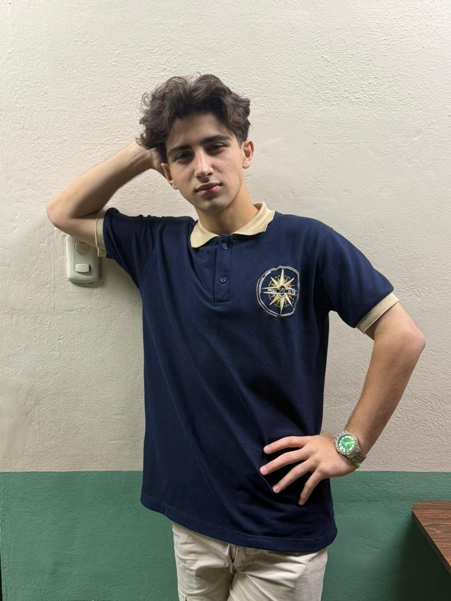
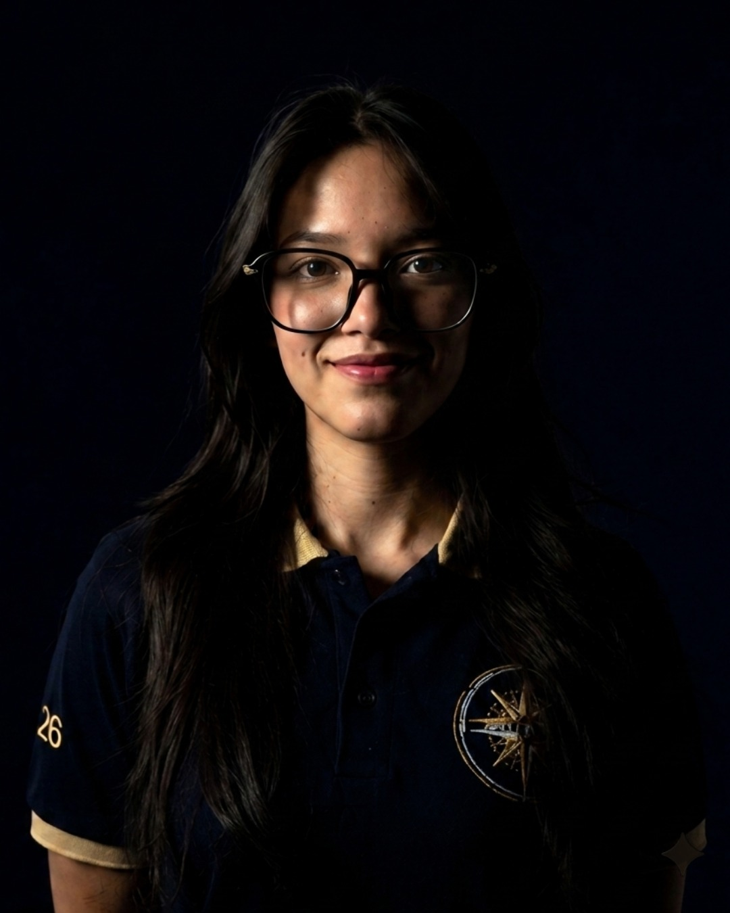
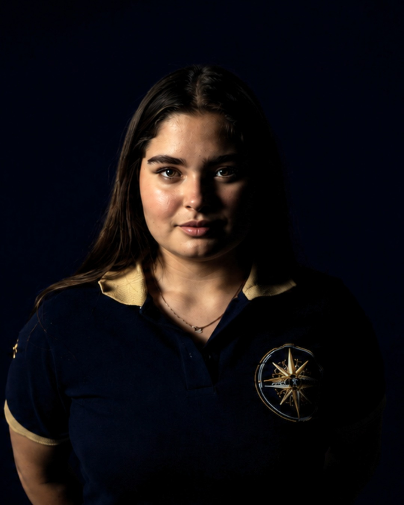
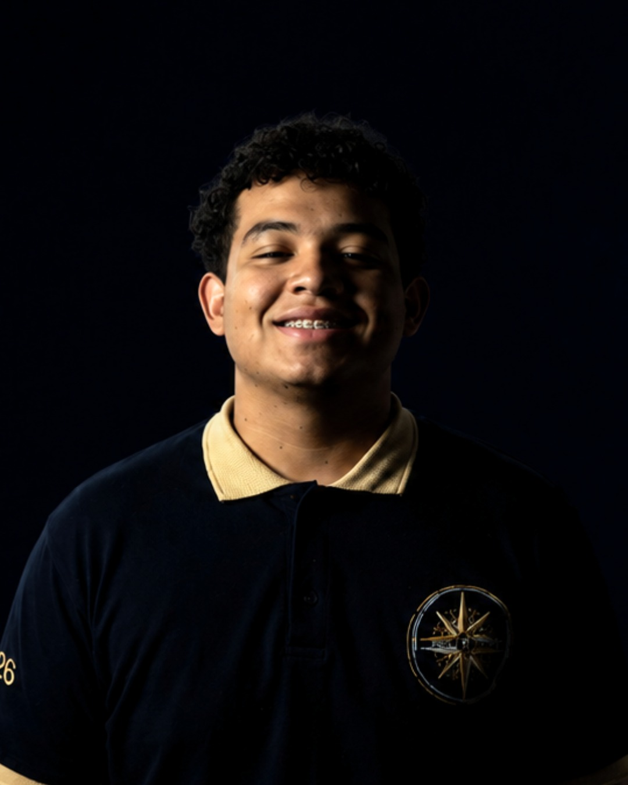

Scroll
Estamos ante la mayor revolución intelectual de la historia humana. Conoce al equipo que explora esta frontera.

CEO & Fundador.

Estratega de inversiones.
CEO Piensa Rápido.

Directora Creativa.

Noguera Films.
Desciende hacia la tesis
El problema
Continuar
La IA impulsa una transformación global liderada por potencias económicas. Su integración educativa trasciende la automatización, permitiendo una personalización profunda y optimización docente.
Determinar el uso de la IA en el proceso académico de los estudiantes de tercer año de la U.E. LITIN.
Modernización de métodos educativos mediante capacitación docente y personalización del aprendizaje.
Evolución
Continuar
El estudio de la Inteligencia Artificial no es un fenómeno aislado. Investigaciones previas sugieren que la implementación de algoritmos de aprendizaje profundo en entornos de secundaria mejora la retención de conceptos lógicos en un 40%.
Marco regulatorio sobre el uso de tecnologías en instituciones venezolanas.
Machine Learning, Redes Neuronales y Procesamiento de Lenguaje Natural.
Análisis dependiente e independiente sobre el rendimiento estudiantil.
Metodología
Continuar
La investigación combina métodos cuantitativos y cualitativos para una comprensión integral del impacto de la IA en el aprendizaje estudiantil.
Se utilizarán encuestas y análisis estadísticos para medir el rendimiento académico de los estudiantes.
Entrevistas y grupos focales se llevarán a cabo para obtener perspectivas sobre la experiencia de aprendizaje.
Análisis
Continuar
Los resultados muestran mejoras en la comprensión conceptual y en la resolución de problemas tras la integración de herramientas de IA en el aula. Se observó mayor motivación y participación activa en actividades guiadas por modelos adaptativos.
Incremento promedio del rendimiento académico en pruebas estandarizadas: +12% (p < 0.05). Reducción de la tasa de abandono en actividades digitales.
Estudiantes reportan mayor claridad en explicaciones personalizadas y docentes destacan ahorro de tiempo en tareas repetitivas.
Los hallazgos sugieren la necesidad de capacitación docente continua y protocolos éticos para el uso responsable de IA. Se recomienda ampliar el estudio a más cohortes para robustecer la evidencia.
Síntesis
Continuar
La integración de IA en el proceso educativo mostró efectos positivos en la comprensión, motivación y rendimiento. Sin embargo, su éxito depende de formación docente, infraestructura y lineamientos éticos claros.
Se concluye que la IA tiene potencial transformador en la educación cuando se implementa con evidencia, equidad y responsabilidad. Se recomienda institucionalizar buenas prácticas y políticas que garanticen beneficios sostenibles.
El Conocimiento
La inteligencia biológica es la base de todo progreso. Su motor principal es la plasticidad sináptica, permitiéndonos no solo procesar información, sino otorgarle un peso emocional y moral.
A diferencia de los modelos estáticos, el cerebro humano utiliza el razonamiento abductivo para generar soluciones creativas a partir de datos incompletos.
No toda la Inteligencia Artificial es igual. Cada variante aporta una capacidad única al ecosistema educativo, transformando el aula en un entorno dinámico.
Capacidad de crear contenido original (texto, código, imágenes) a partir de instrucciones.
Co-creación de materiales, resúmenes personalizados y generación de casos de estudio únicos para cada alumno.
Análisis de patrones históricos para anticipar resultados o comportamientos futuros.
Identificación temprana de riesgo de deserción y predicción de áreas donde el alumno necesitará refuerzo.
Sistemas diseñados para el procesamiento del lenguaje natural en diálogos complejos.
Tutores socráticos 24/7 que guían al estudiante mediante preguntas en lugar de dar respuestas directas.
Motores que modifican su estructura y contenido en tiempo real según la interacción.
Personalización masiva del currículo: la dificultad y el formato cambian según el ritmo de cada estudiante.
La IA actúa como una extensión cognitiva. Su arquitectura de silicio permite la detección de patrones sutiles en petabytes de información en milisegundos.
Capacidad de análisis de Big Data inaccesible para la mente biológica.
Modelado de escenarios futuros basado en billones de variables históricas.
La tecnología sin valores es ciega. La transición requiere una supervisión humana constante para evitar sesgos y asegurar la transparencia.
Sesgos de datos, falta de explicabilidad y pérdida de privacidad sistémica.
Alinear la inteligencia sintética con la dignidad y el bienestar colectivo.
El aula evoluciona de un centro de transferencia a un hub de innovación asistida. La IA no dicta el conocimiento; personaliza el camino para que el humano lidere la creatividad.
Sistemas que ajustan la dificultad y el método en tiempo real según la respuesta del estudiante.
La IA actúa como tutor persistente, fomentando el pensamiento crítico mediante el diálogo.
Tu investigación está siendo saboteada por noticias falsas.
Depura tu bibliografía tocando las NOTICIAS FALSAS.
Protege los hechos reales para aprobar la tesis.
Combo rápido (x2) | Espacio: Concentración Máxima